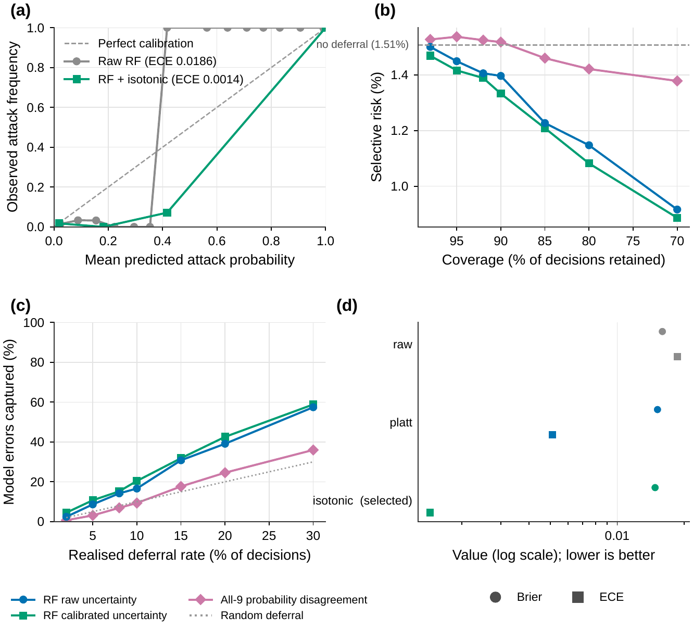

Version 1.1, accepted in BenchCouncil Transactions on Benchmarks, Standards and Evaluations
Every intrusion detector makes mistakes. Which of its predictions should a person check?
HITL-IoT is a reproducible smart-home IoT benchmark for the questions that come after detection: how confident the model really is, which predictions to send for review, and when intervening helps or harms.
Try a review budget
Each thin line is one of the 19,177 held-out test flows, ordered from least to most confident Random Forest prediction. Red marks are the 289 attacks it missed. Flows left of the amber edge go to review.
- Flows sent to review
- 1,535
- Missed attacks caught by review
- 41 of 289
- Share of errors caught
What is in the benchmark
A seeded generator simulates one week of traffic in a smart home with five kinds of device, twelve attack families and fixed train, validation and test splits. Every file can be regenerated byte for byte and checked against published SHA-256 hashes.
On top of detection, a 10,227-flow subset carries oversight-profile metadata: a decision, confidence, latency and rationale from configurable review profiles. That makes deferral, routing and correction-versus-harm experiments repeatable.
- Flows
- 127,845
- 108,668 benign, 19,177 attack
- Columns
- 60
- 39 allowed as IDS features
- Devices
- 5 types
- 12 instances: cameras, thermostats, speakers, TVs, doorbells
- Attacks
- 12 families
- reconnaissance, command and control, data movement, device manipulation
- Time span
- 168 hours
- one simulated week, seed 42
- Oversight subset
- 10,227
- 8% of flows, chosen by ambiguity
Download the data
Three CSV files are all you need. Each link downloads the frozen v1.1 file directly from GitHub.
| File | Contents | Rows × cols | Size | Download |
|---|---|---|---|---|
HITL-IoT_dataset_v1.1.csv |
Every flow, with features, labels and oversight metadata | 127,845 × 60 | 55.1 MB | Download |
HITL-IoT_splits_v1.1.csv |
Official train, validation and test assignment; join on flow_id |
127,845 × 4 | 5.8 MB | Download |
HITL-IoT_oversight_subset_v1.1.csv |
The 10,227 oversight-selected flows, same 60 columns | 10,227 × 60 | 5.9 MB | Download |
Also: feature policy (the 39 allowed IDS features), column schema, SHA-256 checksums and the result archives.
Load it in Python
import pandas as pd
base = "https://github.com/abubakarwakili9/HITL-IoT-Dataset/raw/main/data/v1.1/dataset/"
df = pd.read_csv(base + "HITL-IoT_dataset_v1.1.csv", low_memory=False)
splits = pd.read_csv(base + "HITL-IoT_splits_v1.1.csv")
df = df.merge(splits, on=["flow_id", "timestamp"])
train = df[df.temporal_split == "train"] # 89,492 flows
test = df[df.temporal_split == "test"] # 19,177 flowsReference results
Nine models trained on the 39 flow features, scored once on the chronological test split (70/15/15). Reproduce any row with the benchmark scorer.
| Model | Macro-F1 | MCC | AUROC |
|---|
Bars show Macro-F1 on a 0.90 to 1.00 scale.
False-alarm rates stay below 0.7% for every model, but false-negative rates range from 10.2% to 23.2%. The models rarely cry wolf; they do miss attacks. That asymmetry is what the oversight tasks study.
What the oversight experiments found
- Missed attacks look confident. Reviewing the least-confident 8% of test flows catches 15.2% of the Random Forest's errors after calibration.
- Calibration fixes the probabilities, not the misses. Isotonic calibration cuts expected calibration error from 0.0186 to 0.0014.
- Two kinds of "uncertain" barely overlap. The generator's ambiguity and the model's own uncertainty agree almost at chance (AUROC 0.503, Spearman ρ 0.053).
- Blind override does harm. Letting review profiles overrule every reachable prediction corrects 7 errors and introduces 293. A confidence gate prevents this.
Results from the accepted article, computed with configured profiles rather than people.

Datasheet
Documentation in the seven-part format of Datasheets for Datasets (Gebru et al.).
Motivation
Most IoT intrusion datasets provide traffic features and labels only, so they cannot test what happens after a prediction: deferral, review routing, calibration and the trade-off between correcting and harming decisions. HITL-IoT provides a controlled, repeatable setting for those questions, relevant to human-oversight requirements such as Article 14 of the EU AI Act. Created by Abubakar Wakili (Euromed University of Fez), Muhammad Idris (University of Passau) and Sara Bakkali (Euromed University of Fez). No specific funding was received.
Composition
127,845 flow records with 60 columns: time, addressing, ports and services, device identity, volume and rate statistics, per-device rolling statistics, labels (is_attack, attack_type), construction signals and oversight-profile fields. 85.0% benign and 15.0% attack across twelve attack families. The oversight subset has 10,227 records: 8,160 high, 1,557 medium and 510 low competence profiles. Addresses are synthetic; the dataset contains no personal data.
Collection process
Nothing was captured. A deterministic generator (seed 42) simulates 168 hours, 15 to 21 January 2024, for twelve devices, with attack models whose port mimicry and data similarity are configured to overlap with benign traffic. No human participants were involved.
Preprocessing and labelling
Labels are known by construction. The oversight subset is the top 8% of flows by ambiguity score. Version 1.1 removes label shortcuts found in v1.0 (for example a constant destination MAC for attacks) and renames v1.0's simulated "annotator" fields as oversight-profile metadata. A feature policy separates the 39 detection features from construction signals.
Uses
Intended for leakage-safe IDS benchmarking, probability calibration, selective prediction, learning to defer, review-routing and correction-versus-harm analysis, and teaching. Not suitable for claims about real analyst behaviour, for operational deployment decisions, or as a replacement for capture-based datasets. Cross-dataset tests show a substantial domain gap to CICIoT2023 and ToN-IoT.
Distribution
Free under CC BY 4.0 from GitHub. A versioned Zenodo archive with its own DOI accompanies each release.
Maintenance
Maintained by Abubakar Wakili. Report problems or submit benchmark results through GitHub issues. Released versions are frozen; any data change becomes a new version with its own changelog and DOI. Version 1.0 is superseded and kept only for provenance.
Cite HITL-IoT
Please cite the article and the dataset version you used.
@article{wakili2026hitliot,
author = {Wakili, Abubakar and Idris, Muhammad and Bakkali, Sara},
title = {{HITL-IoT}: A Reproducible Dataset and Benchmark for Studying
Trustworthy Human--AI Collaboration, Oversight Mechanisms, and
Selective Deferral in IoT Cybersecurity},
journal = {BenchCouncil Transactions on Benchmarks, Standards and Evaluations},
year = {2026},
note = {Accepted}
}@misc{wakili2026hitliot_data,
author = {Wakili, Abubakar and Idris, Muhammad and Bakkali, Sara},
title = {{HITL-IoT} Dataset, version 1.1},
year = {2026},
howpublished = {\url{https://github.com/abubakarwakili9/HITL-IoT-Dataset}},
note = {CC BY 4.0}
}